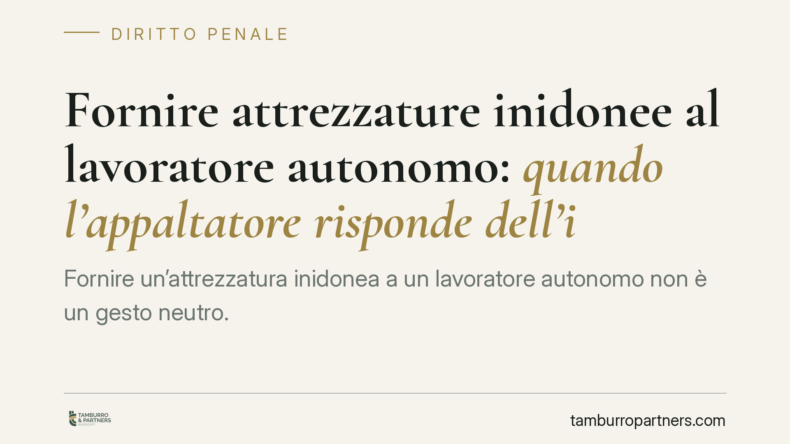

Fornire attrezzature inidonee al lavoratore autonomo: quando l'appaltatore risponde dell'infortunio
Fornire un'attrezzatura inidonea a un lavoratore autonomo non è un gesto neutro. Secondo un orientamento della giurisprudenza penale, chi mette a disposizione strumenti inadeguati può assumere una posizione di garanzia equiparabile al datore di lavoro, rispondendo delle lesioni colpose che ne derivano. Un tema che riguarda appaltatori, committenti e autonomi nei cantieri.

Il principio in gioco
Un appaltatore fornisce a un lavoratore autonomo una scala inadeguata al lavoro da svolgere. Il lavoratore cade e si ferisce. Di chi è la responsabilità penale?
La questione ruota attorno al cosiddetto principio di effettività: nella sicurezza sul lavoro conta ciò che una persona fa concretamente, non soltanto la qualifica formale che riveste. Chi si ingerisce nell'esecuzione dei lavori — ad esempio fornendo le attrezzature — può attrarre su di sé gli obblighi di sicurezza, anche se sulla carta non è il datore di lavoro dell'infortunato.
> Nota sulla fonte. La sintesi di partenza richiama una pronuncia con estremi (numero e anno) che appaiono non verificabili e cronologicamente incongrui. In questa sede il tema è quindi trattato in chiave di principio consolidato, senza citare un singolo arresto non confermato. Prima di ogni uso operativo va verificato l'estremo esatto della sentenza rilevante.
Inquadramento normativo
Il riferimento centrale è l'art. 299 del D.lgs. 81/2008 (Testo Unico sulla sicurezza sul lavoro). La norma disciplina l'esercizio di fatto dei poteri direttivi: chi esercita in concreto i poteri tipici del datore di lavoro, del dirigente o del preposto assume la relativa posizione di garanzia, a prescindere dalla formale investitura. È la traduzione normativa del principio di effettività.
Rileva inoltre l'art. 26 del D.lgs. 81/2008, che regola gli obblighi in caso di appalto: verifica dell'idoneità tecnico-professionale dell'impresa o del lavoratore autonomo, informazione sui rischi specifici, cooperazione e coordinamento tra i soggetti presenti nell'area di lavoro.
Sul versante penale, le lesioni personali colpose sono punite dall'art. 590 c.p.. Quando derivano dalla violazione di norme antinfortunistiche, opera l'aggravante prevista dall'art. 590, comma 3, c.p., con conseguenze rilevanti sulla procedibilità e sulla misura della pena.
Cosa cambia in concreto
Per l'appaltatore: fornire attrezzature a un autonomo può costituire ingerenza nell'esecuzione dei lavori. Se lo strumento è inidoneo e da ciò deriva un infortunio, l'appaltatore rischia di rispondere come garante, pur non essendo il datore di lavoro dell'infortunato.
Per il committente: restano fermi gli obblighi di verifica dell'idoneità tecnico-professionale e di coordinamento previsti dall'art. 26. Non basta affidare i lavori a terzi per liberarsi di ogni responsabilità.
Per il lavoratore autonomo: l'autonomia non equivale a esclusiva assunzione del rischio. Chi gli fornisce mezzi inadeguati può concorrere nella responsabilità per l'infortunio subìto.
Il limite della responsabilità
La posizione di garanzia non è automatica né illimitata. Perché sussista responsabilità penale servono due elementi.
Il primo è il nesso causale: l'evento lesivo deve essere conseguenza dell'attrezzatura inidonea, non di un fattore del tutto autonomo e imprevedibile. Una condotta abnorme dell'infortunato, estranea al rischio governabile dal garante, può interrompere il nesso.
Il secondo è la colpa: occorre che la fornitura dello strumento inadeguato sia rimproverabile, per negligenza, imprudenza, imperizia o violazione di regole cautelari. Non ogni difetto dell'attrezzatura, di per sé, fonda una condanna: va accertata la concreta esigibilità di una condotta diversa.
È questo equilibrio a impedire derive verso una responsabilità oggettiva, estranea al nostro sistema penale.
Cosa fare in concreto
- Verificare l'idoneità delle attrezzature prima di metterle a disposizione di terzi: la scelta dello strumento non è un dettaglio, ma una possibile fonte di responsabilità.
- Documentare l'idoneità tecnico-professionale dell'impresa o dell'autonomo affidatario, come richiede l'art. 26 D.lgs. 81/2008.
- Definire per iscritto chi fornisce cosa: la tracciabilità della fornitura chiarisce le rispettive posizioni di garanzia.
- Attivare coordinamento e informazione sui rischi specifici tra tutti i soggetti presenti nell'area di lavoro.
- In caso di infortunio, conservare la documentazione dell'attrezzatura coinvolta e delle condizioni operative, elementi decisivi per la ricostruzione di nesso causale e colpa.
In sintesi
Nel diritto della sicurezza la qualifica formale cede il passo alla realtà dei fatti. Chi esercita concretamente poteri e compiti tipici del datore di lavoro ne assume gli obblighi. La fornitura di strumenti inidonei può essere una di queste condotte: motivo sufficiente perché ogni operatore del cantiere valuti con attenzione ciò che mette, materialmente, nelle mani altrui.
Contributo informativo a cura di Tamburro & Partners - Avv. Giuseppe Tamburro. Non costituisce parere legale.
Ogni condominio ha una storia a sé.
Se gestisci un'amministrazione e vuoi un confronto su una specifica questione condominiale, scrivi allo studio. Ti rispondiamo entro un giorno lavorativo.